차에서 쉬는 사람들, 2024
친구는 퇴근하고 지하주차장에 주차를 하고 올라가기 전 잠깐 음악을 틀어놓고 10분에서 20분정도 쉬었다가 올라간다는 이야기를 해주었다.
이 이야기를 들었을 때는 ‘굳이 집에서 쉬면 되지 왜 어중간한 차라는 공간에서 쉬지?’라는 생각이 들었다.
그 뒤 다른 친구들을 만나며 차에서 쉬는 친구가 있다고 간략하게 이야기를 하니 그런 사람들 되게 많다는 이야기를 들었다. 인터넷에 검색해보니 실제로 차에서 쉬는 사람들이 많다는 것을 알게되었다.
퇴근 후 가사노동이나 육아를 시작하기 전 숨고르기를 위해 잠깐 차에서 쉰다는 사람도 있었고, 회사 점심시간에 회사 동료들을 마주치지 않고 편하게 쉬고싶어 차에 들어간다는 사람도 있었다.
그러고보니 나 또한 잘 곳이 없어서 차에서 잔적이 있었다.
차라는 공간이 이동수단 만이 아닌 휴식의 공간으로도 쓰인다는 것이 흥미로웠다. 차에서 휴식이 이루어질 수 있는 이유는 아마도 막힌 공간 때문일 것이다. 아무한테도 방해 받지 않는 나만의 공간이라는 생각에서이지 않을까.
차라는 공간이 그렇기에 사람들의 내밀한 공간이라는 느낌이 들었다. 차에서 쉬는 사람들은 어떤 내밀한 감정을 표출하는지 궁금해 작업을 시작하였다.
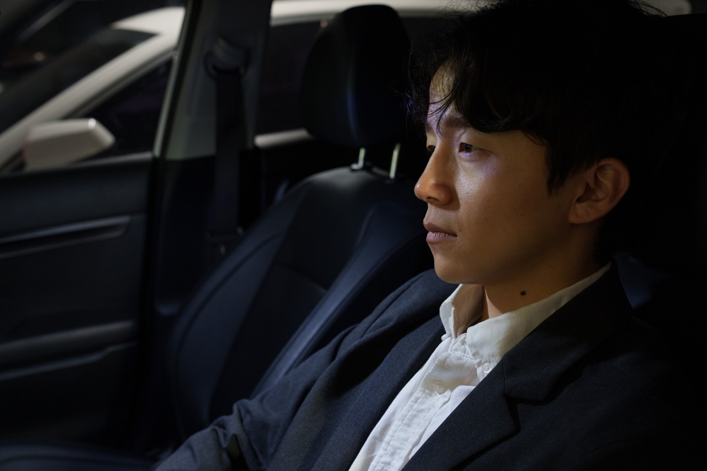
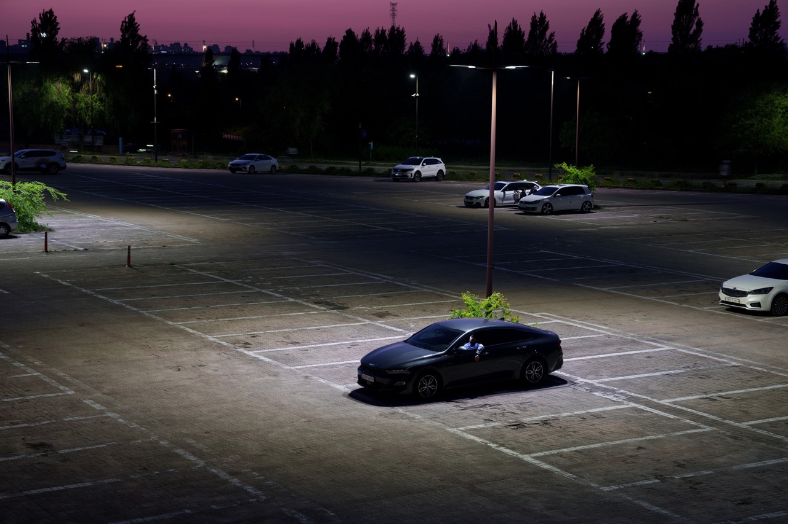
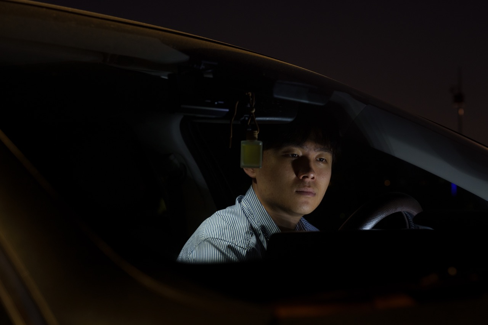
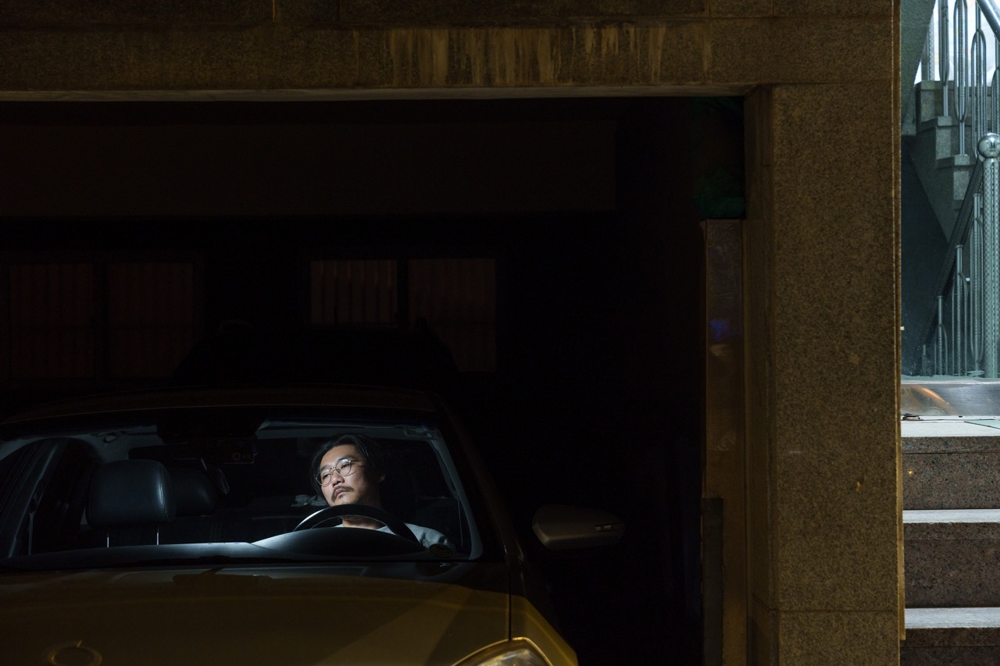
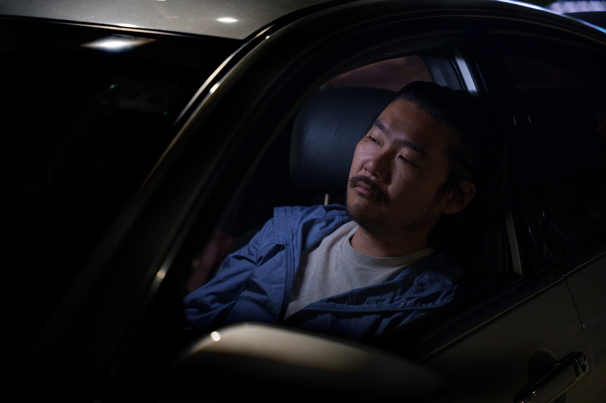
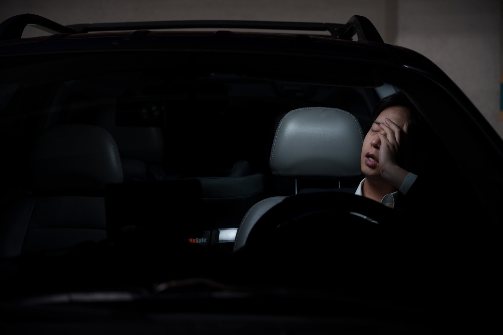
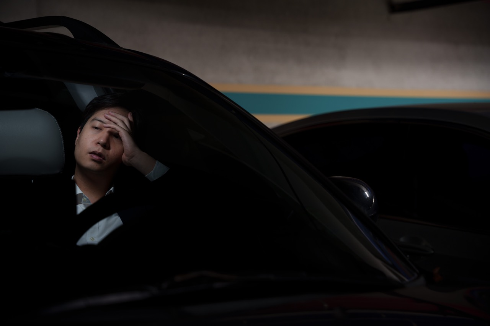
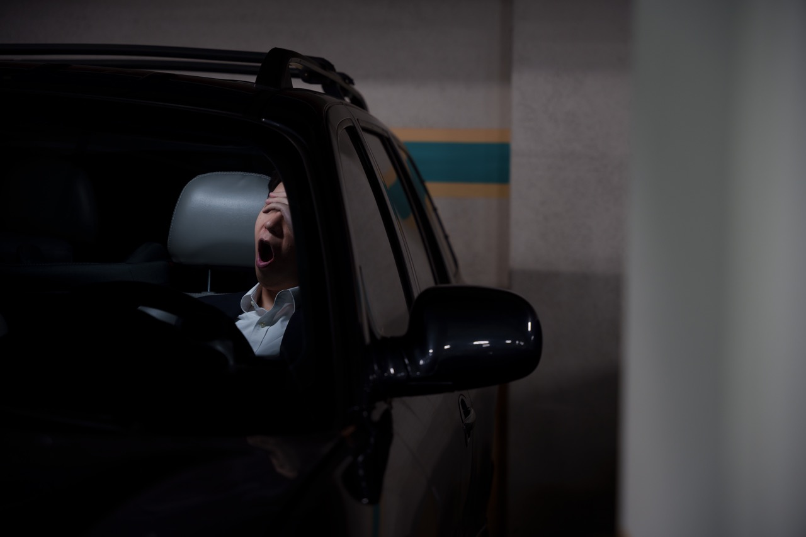
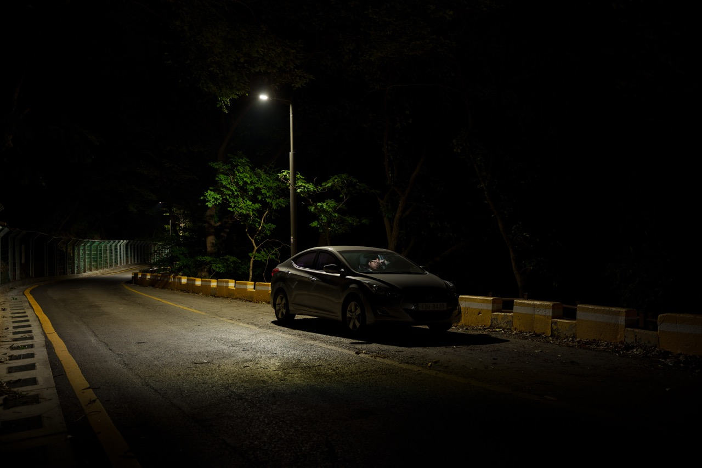
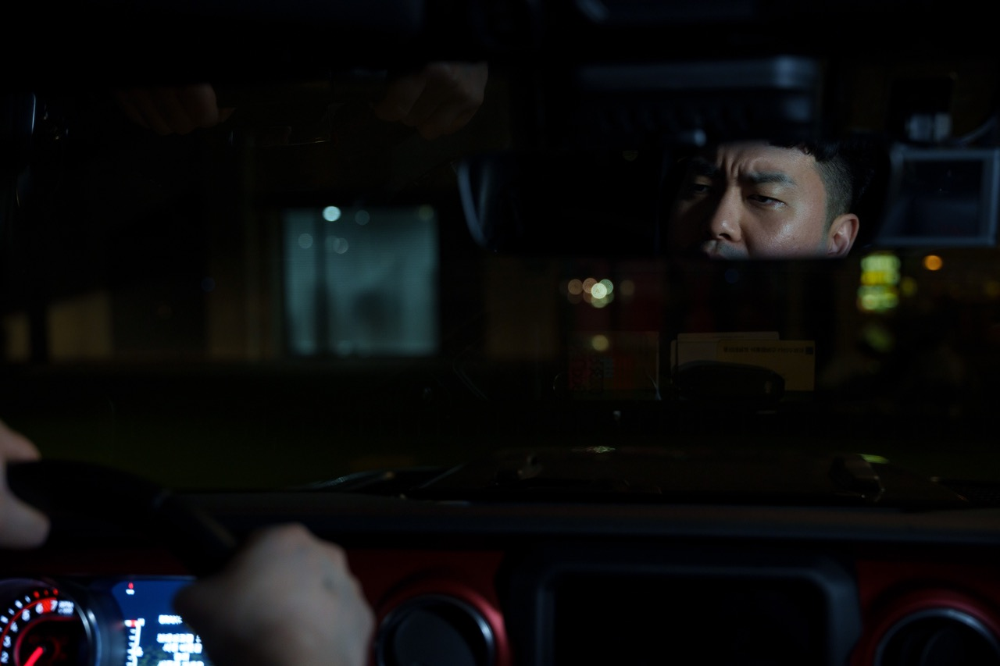
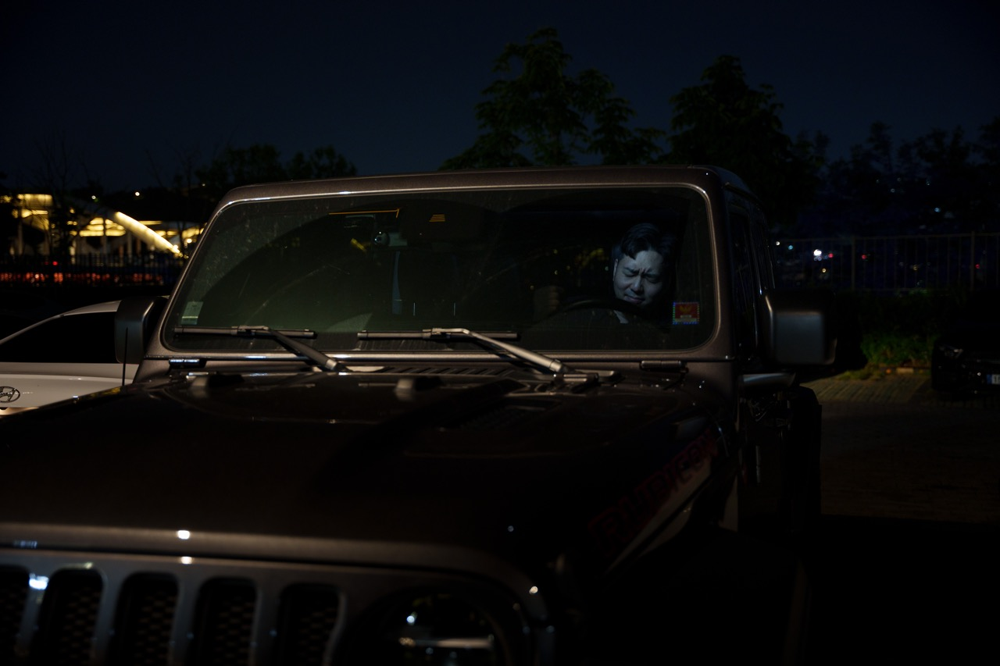